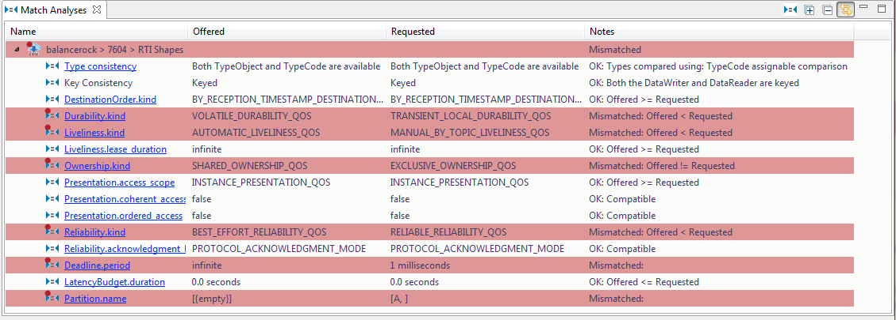
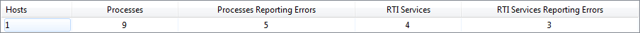
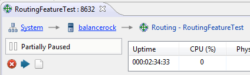
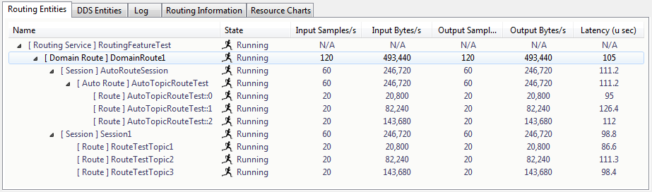
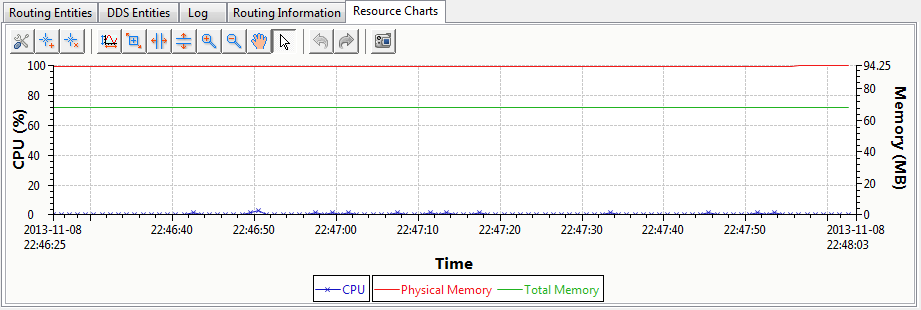
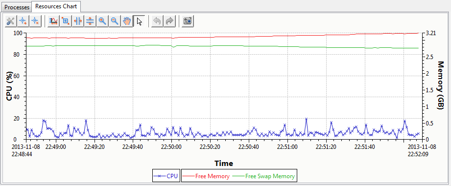
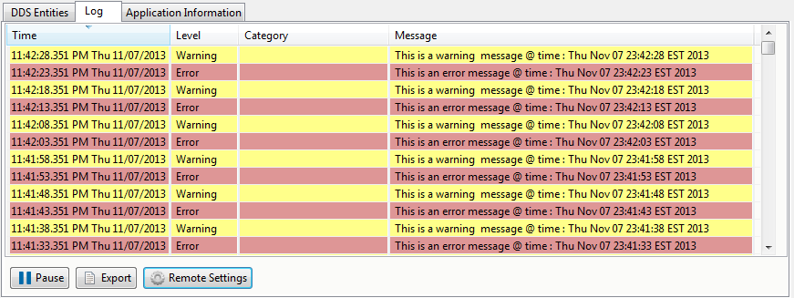
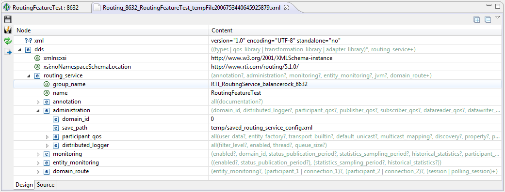

RTI Admin Console: Features Overview
RTI's Admin Console offers you a
centralized tool for monitoring, debugging, and administering your
distributed system. This document provides an overview of the key
features available in Admin Console.

Admin Console proactively checks to ensure that your distributed
system's Quality of Service (QoS) settings are compatible. This analysis
happens automatically and in real-time. As QoS changes occur in your
system, Admin Console is notified and updates the analysis to reflect
the most recent settings.

Admin Console collects various system health information and
summarizes it in one easy-to-read table. You will see the number of
hosts participating in your distributed system, the number of RTI
services and processes running on those hosts, and whether there
are any errors or warnings.

You can use Admin Console to remotely administer RTI services (for
those services that support remote administration). You can remotely
enable, disable, pause, or resume a service or its components.

For RTI services that provide detailed performance statistics, such as
Routing Service, Admin Console will display information such as data
throughput and latency for each route.

Routing Service also provides resource consumption data, Admin
Console displays this information in both a table and a chart.

Routing Service also provides resource consumption data for the host
that it runs on, Admin Console displays this information in both in a
chart.

Log messages contain crucial information for each component in the
distributed system. Admin Console provides a Distributed Log view to
display log messages from any RTI services or processes that use
RTI Distributed Logger. You can also customize the verbosity of the
log messages through the Log.

For supported RTI services, Admin Console can retrieve the current
configuration remotely at run time.
In addition to viewing the latest configuration, you can also modify
the configuration and update the service remotely using the Apply
button .
Admin Console uses the Eclipse
Framework and provides very customizable layouts for all the views.
You can easily rearrange the views by opening and closing views as
needed, and dragging and docking tabs to various windows. You can also
easily maximize a particular tab by simply double-clicking on it.